Mục tiêu học tập
Học xong Chương 2, bạn cần làm được từng việc dưới đây. Nhãn cho biết nội dung nằm ở mục nào.
- 2.1Mô tả việc các ý tưởng về kiến tạo mảng bắt đầu từ giả thuyết trôi dạt lục địa của Alfred Wegener.
- 2.2Mô tả các lớp vật lý và hóa học của Trái Đất và ảnh hưởng của chúng đến chuyển động của mảng.
- 2.2.3Giải thích chuyển động ở ba loại ranh giới mảng gây ra động đất, núi lửa và quá trình tạo núi như thế nào.
- 2.3Nhận biết ranh giới hội tụ, gồm hút chìm và va chạm, là nơi các mảng tiến lại gần nhau.
- 2.4Nhận biết ranh giới phân kỳ, gồm các đới tách giãn và sống núi giữa đại dương, là nơi các mảng tách xa nhau.
- 2.5Giải thích ranh giới chuyển dạng là nơi hai mảng kề nhau trượt cắt qua nhau.
- 2.6Mô tả chu trình Wilson: tách giãn lục địa, hình thành bồn đại dương, hút chìm mảng và khép bồn đại dương.
- 2.7Giải thích cách dùng dấu vết của điểm nóng (nơi mácma liên tục dâng lên) để tính chuyển động của mảng.
Cách dùng tài liệu này
Các từ gạch chân là thuật ngữ chính. Nhấn vào một từ, hoặc mở Thuật ngữ ở góc dưới bên phải, để đọc và tìm mọi định nghĩa trong chương. Ô tìm kiếm nhận cả tiếng Việt không dấu và tên tiếng Anh. Các sơ đồ động sẽ đứng yên nếu thiết bị của bạn bật chế độ giảm chuyển động.
2.0Một cuộc cách mạng trong địa chất học
Có những ý tưởng buộc giới khoa học phải xem xét lại toàn bộ một ngành, tức một (paradigm shift). Sinh học có cuốn Nguồn gốc các loài của Darwin (1859), các quy luật di truyền của Mendel (1866) và mô hình cấu trúc ADN của Watson, Crick và Franklin (1953); vật lý có thuyết tương đối và cơ học lượng tử của Einstein. Với địa chất học, cuộc cách mạng ấy là (plate tectonics): học thuyết cho rằng chuyển động của những khối lớn ở các lớp ngoài của Trái Đất tạo ra động đất, núi và núi lửa. Nhiều quá trình của Trái Đất trở nên dễ hiểu hơn khi nhìn qua lăng kính này, nên giáo trình trình bày nó đầu tiên.
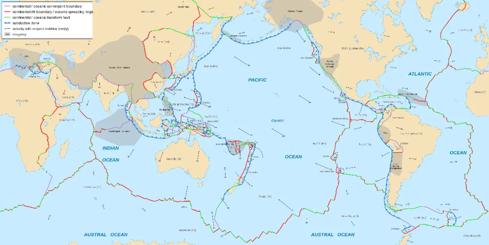
2.1Giả thuyết trôi dạt lục địa của Alfred Wegener
Alfred Wegener (1880–1930) là nhà khoa học người Đức chuyên về khí tượng học và khí hậu học. Năm 1910, ông không đồng ý với cách giải thích được chấp nhận lúc đó rằng cầu đất liền Bering hình thành do (isostasy) và các cầu tương tự từng nối các lục địa. Sau khi tổng hợp tài liệu, ông công bố giả thuyết (continental drift): các lục địa ban đầu nối liền nhau rồi trôi dạt ra xa. Ông chưa có cơ chế cụ thể, nhưng có một danh sách dài bằng chứng.
2.1.1 Bằng chứng ban đầu cho thuyết trôi dạt lục địa
Các lục địa khớp nhau. Ngay từ những bản đồ thế giới đầu tiên, người ta đã thấy bờ biển Nam Mỹ và châu Phi khớp nhau; năm 1858, Antonio Snider-Pellegrini đã nghiên cứu sơ bộ về sự tách rời lục địa và các hóa thạch tương đồng. Điểm khác biệt của Wegener là tổng hợp một lượng lớn dữ liệu vào một chỗ, và ông ghép theo mép thật của lục địa, tức (continental shelf), thay vì đường bờ biển hiện nay. Nhờ vậy các mảnh ghép khớp hơn.

Hóa thạch, đá và núi. Wegener so sánh đá, núi, hóa thạch và dấu vết băng hà giống nhau ở hai bờ đại dương. Hóa thạch Mesosaurus, một loài bò sát sống dưới nước nguyên thủy, có ở bờ biển cả châu Phi lẫn Nam Mỹ. Hóa thạch loài bò sát Lystrosaurus có ở châu Phi, Ấn Độ và châu Nam Cực. Đây là những sinh vật sống trên cạn, không thể bơi qua cả một đại dương.

Phản bác bằng cầu lục địa. Những người phản đối cho rằng các (land bridge) vượt đại dương đã cho động thực vật đi qua, rồi bị bào mòn mất. Vấn đề là khó có một cây cầu đất đủ cao và đủ dài để bắc qua một đại dương rộng và sâu.
Bằng chứng khí hậu. Sông băng từng tồn tại ở những vùng vốn rất nóng (nam châu Phi, Ấn Độ, Úc, bán đảo Ả Rập), và Wegener còn tìm thấy hóa thạch thực vật nhiệt đới trong vòng Bắc Cực. Cầu lục địa không giải thích được các dị thường khí hậu này. Lục địa di chuyển là cách giải thích phù hợp nhất với mọi quan sát về khí hậu, đá và hóa thạch.
| Bằng chứng | Quan sát | Vì sao trôi dạt giải thích được |
|---|---|---|
| Lục địa khớp nhau | Nam Mỹ và châu Phi khớp nhau, khớp nhất theo thềm lục địa. | Chúng từng là một khối đất liền. |
| Hóa thạch | Mesosaurus ở châu Phi và Nam Mỹ; Lystrosaurus ở châu Phi, Ấn Độ, châu Nam Cực. | Động vật trên cạn không thể bơi qua đại dương. |
| Đá và núi | Đá và dải núi giống nhau ở hai bờ đại dương. | Các dải này liền mạch trước khi tách ra. |
| Khí hậu (băng hà) | Trầm tích băng hà ở nam châu Phi, Ấn Độ, Úc, Ả Rập vốn ấm. | Những vùng này từng nằm gần cực. |
| Khí hậu (nhiệt đới) | Hóa thạch thực vật nhiệt đới trong vòng Bắc Cực. | Vùng đất đó từng có khí hậu ấm. |
2.1.2 Thiếu cơ chế
Suốt cuộc đời Wegener, ý tưởng của ông bị coi là khoa học ngoài lề. Điểm yếu lớn nhất là không đưa ra được cơ chế đáng tin cho việc lục địa di chuyển, trong khi muốn thay đổi quan điểm bảo thủ của giới khoa học cần bằng chứng đặc biệt thuyết phục. Những người ủng hộ khác viện dẫn Trái Đất giãn nở, co lại, hay thậm chí nguồn gốc Mặt Trăng. Wegener dùng lực ly tâm và (precession), một mô hình về sau bị chứng minh là sai. Ông cũng phỏng đoán về sự tách giãn đáy đại dương với gợi ý về đối lưu nhưng không chứng minh được. Ngày nay ta biết (convection), cùng với trọng lực và mật độ, là một trong những lực chính đẩy các mảng.

2.1.3 Từ trôi dạt lục địa đến học thuyết kiến tạo mảng
Wegener mất năm 1930 trong một chuyến thám hiểm ở Greenland. Từ thập niên 1950 bắt đầu có bằng chứng mới, và đến thập niên 1960 các nhà khoa học đã tìm ra cơ chế còn thiếu, (seafloor spreading), nên thuyết trôi dạt lục địa được chấp nhận thành học thuyết kiến tạo mảng. Dữ liệu GPS và động đất hiện nay vẫn tiếp tục ủng hộ học thuyết này.
- Snider-Pellegrini vẽ bản đồ các lục địa ghép lại với nhau.
- Wegener đặt câu hỏi về thuyết cầu lục địa và bắt đầu xây dựng giả thuyết trôi dạt.
- Wegener qua đời ở Greenland; thuyết trôi dạt vẫn bị coi là ngoài lề.
- Bắt đầu đo SONAR giữa Đại Tây Dương; Heezen và Tharp vẽ bản đồ sống núi giữa Đại Tây Dương.
- Harry Hess đề xuất thuyết tách giãn đáy đại dương.
- Các dải đảo cực từ được dùng để ủng hộ thuyết tách giãn đáy đại dương.
- Đủ bằng chứng: trôi dạt được chấp nhận thành kiến tạo mảng. J. Tuzo Wilson ghép nối toàn bộ bức tranh.
Lập bản đồ đáy đại dương
Từ năm 1947, các nhà nghiên cứu dùng một dạng cải biến của để lập bản đồ vùng giữa Đại Tây Dương. Bruce Heezen và Marie Tharp vẽ bản đồ đáy biển chi tiết đầu tiên, cho thấy (Mid-Atlantic Ridge): một dãy núi bazan chạy suốt chiều dài Đại Tây Dương, có thành phần hóa học và kích thước khác hẳn núi trên lục địa. Năm 1959, Harry Hess đề xuất thuyết tách giãn đáy đại dương: sống núi giữa đại dương là "nhà máy sản xuất mảng", nơi mảng đại dương mới được tạo ra từ các dãy núi lửa dài. Sau đó các đứt gãy chuyển dạng vuông góc với sống núi được bổ sung để giải thích tốc độ di chuyển khác nhau, và việc phát hiện tâm chấn dọc sống núi đã gắn động đất với chuyển động mảng.
Trầm tích đáy biển là một manh mối khác. Trầm tích mỏng hơn dự đoán, và lớp mỏng nhất nằm gần sống núi. Điều đó có nghĩa sống núi trẻ hơn đáy biển xung quanh, tức đáy biển không đứng yên một chỗ.
Cổ từ học
(paleomagnetism) nghiên cứu từ trường "đóng băng" trong đá, giống như một chiếc la bàn hóa thạch, và đã cung cấp bằng chứng xác thực đầu tiên cho chuyển động mảng. Đá mácma chứa khoáng vật từ tính như (magnetite) hữu ích nhất: khi đá còn lỏng (mácma hoặc dung nham), các khoáng vật định hướng theo từ trường Trái Đất; khi đá nguội, sự định hướng ấy bị giữ lại. Bản ghi gồm (inclination, liên quan đến vĩ độ) và (declination, liên quan đến hướng bắc từ).
Từ lâu các nhà khoa học đã thấy dị thường từ dạng dải xếp đối xứng hai bên sống núi giữa đại dương, với cực từ đảo ngược ở các dải xen kẽ. Đến năm 1963, Hess và những người khác dùng các dải đảo cực này để ủng hộ thuyết tách giãn đáy đại dương (xem thêm Lawrence W. Morley; chi tiết ở mục 2.4.2). Từ tính của đá trên lục địa cũng chỉ về hướng rất xa cực bắc từ hiện nay; thêm yếu tố lục địa di chuyển giải thích dữ liệu tốt hơn là chỉ cho rằng cực từ dịch chuyển.
Đới Wadati-Benioff
Các nhà nghiên cứu khác liên hệ rãnh đại dương và cung đảo với động đất. Tâm chấn vạch ra hình dạng của mảng đại dương chìm vào manti, nằm trên những mặt phẳng bắt đầu gần rãnh và nghiêng xuống dưới lục địa hoặc cung đảo. Các đới động đất sâu này gọi là (Wadati-Benioff zone).

J. Tuzo Wilson
Khi bằng chứng ngày càng nhiều, J. Tuzo Wilson là người đầu tiên ghép nối toàn bộ bức tranh bằng ý tưởng các bồn đại dương mở ra và khép lại (mục 2.6). Ngay sau đó, các nhà khoa học xây dựng mô hình các mảng chuyển động tương đối với nhau với ranh giới rõ ràng, và cuộc cách mạng kiến tạo mảng bén rễ.
Tự kiểm tra: Bài kiểm tra mục 2.1 trong giáo trình (tiếng Anh) ↗
2.2Các lớp của Trái Đất
Thông tin trực tiếp về lòng Trái Đất rất ít. Phần lớn hiểu biết đến từ các mô hình, dữ liệu và thiên thạch. Có hai cách chia lớp Trái Đất: theo thành phần hóa học và theo tính chất vật lý.
2.2.1 Các lớp hóa học
Hai yếu tố chính, nhiệt độ và áp suất, tạo ra ba lớp hóa học riêng biệt.
Vỏ Trái Đất
(crust) là lớp hóa học ngoài cùng. có mật độ tương đối thấp, thành phần giống granit. có mật độ tương đối cao (nhất là khi lạnh và già), thành phần giống bazan. Phần trên của vỏ có tính (như thủy tinh hay đồ gốm, vỡ khi chịu lực, nhất là lực tác dụng nhanh), nên phần lớn động đất xảy ra ở đây. Phần sâu hơn nóng hơn và chịu áp suất lớn hơn nên có tính (như nhựa mềm hay ma tít, biến dạng khi chịu lực).
Đáy của vỏ được đánh dấu bằng một bước tăng lớn của . Đó là , được Andrija Mohorovičić phát hiện năm 1909 khi nghiên cứu sóng động đất ở Croatia. Sự thay đổi này do khác biệt hóa học lớn giữa vỏ và manti. Moho nằm khoảng 5 km dưới đáy biển và 30–40 km dưới lục địa; gần các đợt tạo núi lớn (, tức tạo núi, orogeny) độ sâu của nó tăng gấp đôi.

Manti
(mantle) nằm giữa vỏ và nhân, xuống tới khoảng 2.900 km, và là lớp hóa học có thể tích lớn nhất. Hiểu biết về manti chủ yếu đến từ sóng địa chấn, cùng hai loại mẫu: (ophiolite, những mảnh manti trồi qua vỏ và lộ ra như một phần đáy đại dương) và (xenolith, những mảnh đá được mácma mang lên mặt đất khi phun trào). Phần lớn thể tù là , một loại đá mácma siêu mafic, nên các nhà khoa học cho rằng manti chủ yếu là peridotit.
Nhân
(core) có phần lỏng và phần rắn, chủ yếu là sắt và niken, có thể có ít oxy. Nhân được phát hiện lần đầu qua dữ liệu địa chấn năm 1906. Thiên thạch thường chứa nhiều sắt hơn đá trên bề mặt, và các nhà khoa học cho rằng Trái Đất hình thành từ vật chất thiên thạch; sắt và niken chìm vào trung tâm, nơi phần lỏng của nhân hình thành.
2.2.2 Các lớp vật lý
Trái Đất cũng có thể chia thành năm lớp vật lý theo cách mỗi lớp phản ứng với ứng suất. Hai hệ thống có phần trùng nhau (cùng chung ranh giới nhân–manti) nhưng khác nhau ở nhiều điểm quan trọng.
Thạch quyển
(lithosphere; tiếng Hy Lạp lithos là đá) là lớp vật lý ngoài cùng. Thạch quyển đại dương mỏng và tương đối cứng: dày gần như bằng 0 ở sống núi giữa đại dương, trung bình 140 km ở nơi khác. Thạch quyển lục địa dày hơn (40–280 km) và dẻo hơn nhiều, nhất là ở phần sâu. Thạch quyển bị chia thành các (plate). là nơi hai mảng gặp nhau và chuyển động tương đối với nhau; tại đó ta thấy quá trình tạo núi, động đất và núi lửa.
Quyển mềm
(asthenosphere; astheno- nghĩa là thiếu sức bền) nằm dưới thạch quyển. Lớp này yếu về cơ học nên chuyển động và chảy theo các dòng đối lưu do nhiệt từ nhân gây ra. Khác với thạch quyển, quyển mềm tương đối liền khối (thấy qua sóng địa chấn). Độ sâu của nó phụ thuộc nhiệt độ: gần bề mặt hơn ở sống núi giữa đại dương và sâu hơn nhiều dưới núi và trung tâm các mảng.
Lớp phủ giữa
(quyển giữa, mesosphere), đôi khi gọi là manti dưới, cứng và kém linh động hơn quyển mềm. Phần trên của nó là (khoảng 410 đến 660 km), nơi áp suất và nhiệt độ rất cao khiến khoáng vật liên tục biến đổi sang dạng khác; các nhà địa chấn học nhận ra đới này qua sự thay đổi vận tốc địa chấn. Bên dưới đới chuyển tiếp, quyển giữa khá đồng nhất cho đến nhân.
Nhân ngoài và nhân trong
(outer core) là lớp duy nhất hoàn toàn lỏng, từ độ sâu 2.890 đến 5.150 km (dày khoảng 2.300 km). Năm 1936, nhà địa vật lý Đan Mạch Inge Lehmann dùng dữ liệu địa chấn chứng minh có một (inner core) rắn bên trong; nhân trong dày khoảng 1.220 km. Phần nóng nhất của Trái Đất lại rắn vì áp suất cực lớn giữ nó ở thể rắn. Nhân trong lớn dần khi phần dưới của nhân ngoài đông đặc lại lúc nhiệt thoát ra ngoài.
Người ta cho rằng sắt và niken nóng chảy lưu chuyển trong nhân ngoài tạo ra của Trái Đất, thứ bảo vệ khí quyển và nước. Nếu nhân ngoài ngừng lưu chuyển hoặc đông đặc, Trái Đất sẽ mất các khí và nước nuôi sống sự sống, như điều đã (và đang) xảy ra với Sao Hỏa.
| Hệ thống | Lớp | Độ sâu hoặc bề dày | Tính chất chính |
|---|---|---|---|
| Hóa học | Vỏ | đến Moho: ~5 km (đại dương), 30–40 km (lục địa) | Giống granit (lục địa) hoặc giống bazan (đại dương) |
| Manti | đến ~2.900 km | Thể tích lớn nhất; chủ yếu peridotit | |
| Nhân | dưới ~2.900 km | Sắt và niken (có thể có oxy) | |
| Vật lý | Thạch quyển | đại dương trung bình 0–140 km; lục địa 40–280 km | Cứng; bị chia thành các mảng |
| Quyển mềm | dưới thạch quyển; độ sâu thay đổi theo nhiệt độ | Yếu; chảy theo đối lưu | |
| Lớp phủ giữa | đới chuyển tiếp ~410–660 km, rồi đến nhân | Manti dưới cứng | |
| Nhân ngoài | 2.890–5.150 km (dày ~2.300 km) | Lớp duy nhất hoàn toàn lỏng; tạo từ trường | |
| Nhân trong | dày ~1.220 km | Rắn do áp suất (Lehmann, 1936) |
2.2.3 Các ranh giới kiến tạo mảng
Ở (passive margin), các mảng không chuyển động tương đối với nhau: thạch quyển lục địa chuyển tiếp dần sang thạch quyển đại dương trên cùng một mảng (ví dụ bờ đông Bắc Mỹ và Nam Mỹ). (active margin) là nơi mảng đại dương và mảng lục địa gặp nhau và chuyển động tương đối (ví dụ bờ tây châu Mỹ), do lực ma sát kéo giữa các mảng và chênh lệch mật độ. Phần lớn quá trình tạo núi, động đất và núi lửa hoạt động xảy ra ở rìa chủ động.
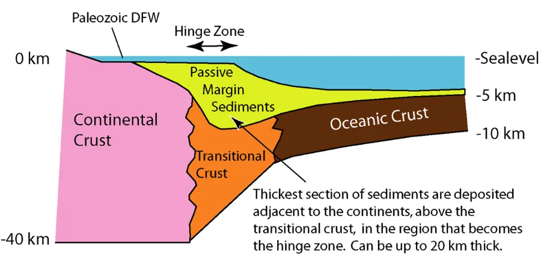
Theo mô hình đơn giản có ba loại ranh giới: (các mảng tiến về phía nhau), (các mảng tách xa nhau) và (các mảng trượt qua nhau).
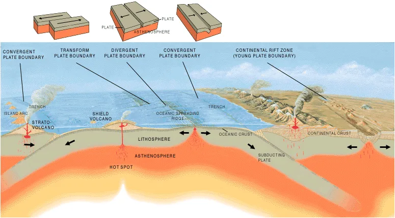
Tự kiểm tra: Bài kiểm tra mục 2.2 trong giáo trình (tiếng Anh) ↗
2.3Ranh giới hội tụ
(convergent boundary), còn gọi là ranh giới phá hủy, là nơi hai hay nhiều mảng tiến về phía nhau. Điều gì xảy ra phụ thuộc vào mật độ. Thạch quyển lục địa nhẹ và nổi hơn quyển mềm. Thạch quyển đại dương đặc hơn thạch quyển lục địa và khi già, lạnh thì có thể đặc hơn cả quyển mềm.
- Hút chìm: hai mảng có mật độ khác nhau gặp nhau, mảng đặc hơn bị đẩy xuống dưới mảng nổi hơn.
- Va chạm: các mảng lục địa hội tụ mà không xảy ra hút chìm.
2.3.1 Hút chìm
(subduction) xảy ra khi một mảng đại dương đặc gặp một mảng nổi hơn (mảng lục địa, hoặc mảng đại dương ấm và trẻ hơn) và chìm vào manti. Chương nêu tốc độ trung bình toàn cầu là 25 dặm mỗi triệu năm. Mảng chìm kéo đáy biển xuống thành một (trench), có thể sâu hơn gấp đôi bồn đại dương bên cạnh (thường 3–4 km); rãnh Mariana sâu gần 11 km.
Nêm bồi kết và lãnh địa kiến tạo
Trong rãnh, trầm tích đáy biển bị nạo lại và ép giữa hai mảng thành (accretionary wedge; còn gọi là mélange hay lăng trụ bồi kết). Các mảnh vật chất lục địa, kể cả vi lục địa, nằm trên mảng hút chìm có thể bị gắn vào nêm và tích tụ thành một vùng đất lớn gọi là (terrane). Phần lớn bang California được tạo từ các lãnh địa kiến tạo bồi kết.
Nóng chảy do chất bốc và cung núi lửa
Khi (slab) chìm xuống, nhiệt và áp suất đẩy các chất bốc (nước, khí cacbonic) ra khỏi khoáng vật ngậm nước và đi vào (mantle wedge), vùng nằm trên phiến và dưới mảng phía trên. Chất bốc làm hạ nhiệt độ nóng chảy của nêm manti, khiến nó nóng chảy theo cơ chế (flux melting). Mácma nổi dâng lên và phun trào, thường tạo thành một chuỗi núi lửa cong, gọi là (volcanic arc; cong do bề mặt Trái Đất cong). Cung núi lửa có thể hình thành trên mảng đại dương hoặc mảng lục địa.
Hút chìm qua bốn bước
- Phiến đại dương đặc chìm xuống ở rãnh; trầm tích dồn thành nêm bồi kết.
- Nhiệt và áp suất giải phóng nước và CO2 từ phiến vào nêm manti.
- Chất bốc hạ nhiệt độ nóng chảy: nóng chảy do chất bốc tạo ra mácma.
- Mácma nổi dâng lên, tạo cung núi lửa trên mảng phía trên.
Hút chìm bắt đầu như thế nào (vẫn còn tranh luận)
Nhìn chung người ta chấp nhận rằng đới hút chìm bắt đầu từ rìa thụ động, rồi trọng lực biến chúng thành rìa chủ động. Các giả thuyết: trọng lực kéo mảng đại dương đặc hơn xuống, hoặc mảng chảy dẻo ở góc thấp. Có bằng chứng cho thấy một đới hút chìm mới có thể đang hình thành ngoài khơi Bồ Đào Nha, và một số nhà khoa học liên hệ các trận động đất lớn như động đất Lisbon năm 1755 với quá trình này, dù bằng chứng chưa chắc chắn. Một giả thuyết khác cho rằng hút chìm bắt đầu ở ranh giới chuyển dạng giữa hai mảng khác mật độ. Có những rìa trông như phải hút chìm nhưng không: các mảng đại dương đặc ở hai bên Đại Tây Dương không chìm xuống, có thể vì liên kết với mảng lục địa mạnh hơn lực kéo xuống do chênh lệch mật độ.
Động đất siêu lớn và sóng thần
Đới hút chìm có những trận động đất và sóng thần lớn nhất; đây là nơi duy nhất có mặt đứt gãy đủ lớn cho động đất cấp 9, và chúng cũng rất sâu. Khi phiến bị kẹt, năng lượng tích tụ; nếu không được giải phóng dần, hai mảng có thể đột ngột trượt dọc hàng trăm kilômét. Vì các đứt gãy này nằm dưới đáy biển, chuyển động có thể gây sóng thần khổng lồ, như sau động đất Ấn Độ Dương năm 2004 và động đất Tōhoku (Nhật Bản) năm 2011.
Bồn trũng trước cung, bồn trũng sau cung và đứt gãy sau cung
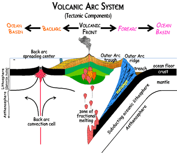
- Mọi đới hút chìm đều có (forearc basin) trên mảng phía trên, giữa cung núi lửa và rãnh, với nhiều đứt gãy và biến dạng (nhất là trong nêm bồi kết).
- Ở một số nơi, lực căng tạo ra (backarc basin) phía sau cung. Một nguyên nhân được đề xuất là (slab rollback): phiến cuộn lùi thay vì trượt thẳng xuống, kéo mảng phía trên ra phía biển và kéo giãn nó "như bột bánh pizza" cho đến khi nứt và sụt xuống. Bồn sau cung sâu và rộng có thể trở thành đới tách giãn lục địa.
- Nơi nhiều mảng đại dương trẻ, nổi bị hút chìm nhanh, mảng phía trên có thể bị uốn và nứt: (back-arc faulting). Đứt gãy sau cung tách giãn kéo đá rời ra; đứt gãy nén, tức (thrust fault), đẩy chúng chồng lên nhau. Dãy Andes có hai sống núi: sống phía tây là một cung núi lửa, còn sống phía đông không có núi lửa đã bị các đứt gãy nghịch chờm làm biến dạng.
| Kiểu | Phần bị biến dạng | Ví dụ |
|---|---|---|
| Da mỏng (thin-skinned) | Lớp đá nông nằm trên mảng lục địa | Pha tạo núi Sevier (kỷ Phấn Trắng) |
| Da dày (thick-skinned) | Đứt gãy ăn sâu vào vỏ | Pha tạo núi Laramide (gần cuối và ngay sau pha Sevier, cùng khu vực) |
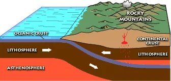
Hút chìm phiến phẳng
(flat-slab subduction, hút chìm nông) đã gây ra pha tạo núi Laramide. Phiến chìm ở góc thấp tiếp xúc với mảng phía trên nhiều hơn bình thường và làm nó biến dạng ở cách đới hút chìm nhiều kilômét.
Hút chìm đại dương–lục địa và đại dương–đại dương


| Đại dương–lục địa | Đại dương–đại dương | |
|---|---|---|
| Mảng nào chìm | Mảng đại dương | Thường là mảng già hơn (lạnh hơn, đặc hơn) |
| Đặc điểm | Rãnh, nêm manti, thường có cung núi lửa lục địa | Rãnh; núi lửa có thể nằm dưới nước, hoặc nhô lên thành |
| Ví dụ | Dãy Cascade (Tây Bắc Thái Bình Dương); phía tây dãy Andes | Quần đảo Aleut; Tiểu Antilles; các chuỗi đảo ở tây Thái Bình Dương |
2.3.2 Va chạm
Khi các mảng lục địa hội tụ (chẳng hạn khi một bồn đại dương khép lại), không mảng nào đủ đặc để hút chìm. Hai khối va mạnh vào nhau trong một cuộc (collision). Không có hút chìm thì không có mácma và hầu như không có núi lửa. Đới va chạm có núi cao không phải núi lửa và một vùng rộng thường xuyên xảy ra động đất lớn. Thạch quyển lục địa dẻo nên biến dạng lan rộng: động đất do va chạm có thể xảy ra cách ranh giới hàng trăm kilômét, khác với dải hẹp ở đới hút chìm. Ví dụ ở lục địa Á–Âu: dãy Pyrenees (từ bán đảo Iberia sang Pháp), dãy Alps (từ Ý đến Trung Âu), dãy Zagros (từ Ả Rập đến Iran) và dãy Himalaya (từ tiểu lục địa Ấn Độ đến Trung Á).
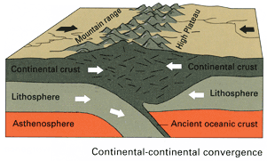
Siêu lục địa
Khi vỏ đại dương nối với lục địa qua rìa thụ động bị hút chìm hoàn toàn, đại dương khép lại và va chạm lục địa bắt đầu. Cuối cùng các lục địa hợp lại thành một (supercontinent). Va chạm đã tạo nên (Toàn Lục Địa), siêu lục địa là trung tâm giả thuyết của Wegener. Trong suốt lịch sử Trái Đất, các lục địa liên tục hợp lại thành siêu lục địa rồi tách ra, gọi là (supercontinent cycle), khoảng 500 triệu năm một lần. Pangaea bắt đầu tách ra khoảng 200 triệu năm trước; một siêu lục địa trước đó, Rodinia, tồn tại 1,1 tỷ năm trước và bắt đầu vỡ ra 800 đến 600 triệu năm trước.

Bồn trước núi, chờm phủ và ophiolit
- (foreland basin) hình thành gần đai núi khi trọng lượng của núi ép mảng tạo thành vùng trũng. Chúng có thể xuất hiện ở đới hút chìm nhưng phổ biến nhất ở đới va chạm. Vịnh Ba Tư, tạo ra bởi trọng lượng dãy Zagros, có lẽ là ví dụ hiện đại tiêu biểu nhất.
- Một mảng mang cả thạch quyển đại dương lẫn lục địa có thể hút chìm một phần, nhưng sức nổi ngăn nó chìm hết. Trong những trường hợp rất hiếm, một phần mảng lục địa bị kẹt dưới mảng đại dương đang chìm: (obduction). Vỏ lục địa nổi trở lại bề mặt khá nhanh, mang theo những mảnh manti và đáy biển lên trên lục địa. Các đá này là ophiolit, giúp hiểu thành phần của manti.
Tự kiểm tra: Bài kiểm tra mục 2.3 trong giáo trình (tiếng Anh) ↗
2.4Ranh giới phân kỳ
Ở (divergent boundary), còn gọi là ranh giới kiến tạo (constructive boundary), các mảng tách xa nhau. Có hai loại: đới tách giãn lục địa (ở những điểm yếu của mảng lục địa) và sống núi giữa đại dương. Sống núi giữa đại dương thường bắt đầu từ một đới tách giãn lục địa làm mảng tách đôi; nước biển tràn vào khe hở và các phần trôi xa nhau thành những lục địa riêng. Quá trình này là (rift-to-drift).
2.4.1 Tách giãn lục địa
Ở nơi mảng lục địa rất dày, chúng phản xạ nhiều nhiệt trở lại manti đến mức đối lưu mạnh đẩy vật chất manti siêu nóng lên áp vào mảng và làm mềm nó. Lực căng từ dòng dâng này kéo mảng đã yếu tách ra. Mảng mỏng đi và hình thành các vết nứt sâu gọi là (normal fault, đứt gãy tách giãn). Các khối giữa những đứt gãy lớn sụt xuống thành (rift valley), chứa các khối sụt hình nêm gọi là (graben); các vai nhô cao là (horst). Nếu chỉ một bên khối sụt xuống thì gọi là (half-graben). Đới tách giãn có thể phát triển thành hồ lớn, thậm chí đại dương.
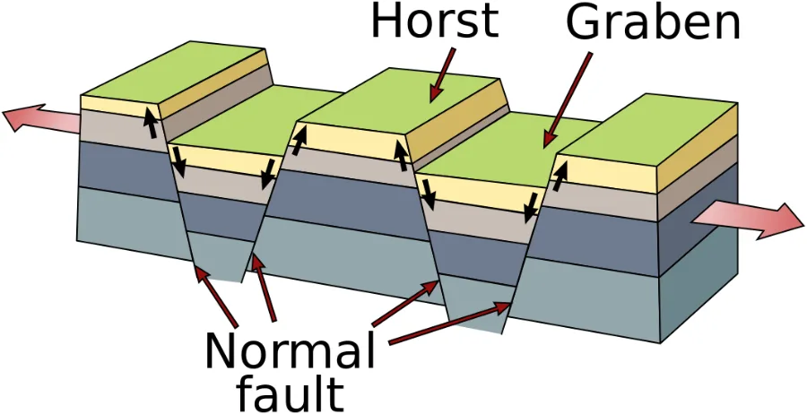
Tách giãn không xảy ra ngẫu nhiên. Có hai yếu tố chi phối:
- Nó không xảy ra ở phần lõi già, ổn định của lục địa, gọi là (craton).
- Khi xảy ra, kiểu vỡ giống các đường may của quả bóng đá (khối hai mươi mặt cụt), kiểu nứt phổ biến nhất trên một quả cầu giãn nở đều vì tốn ít năng lượng nhất.
Tách giãn thường phát triển dọc một đường may và tắt dần ở các đường khác. Các đường may không hoạt động đó là (failed rift arm); chúng vẫn là điểm yếu và có thể phát triển thành . Ví dụ: vùng trũng thung lũng Mississippi (Mississippi Valley Embayment), nơi thượng nguồn sông Mississippi chảy qua. Ở nơi các nhánh không thất bại, như tam giác Afar, ba ranh giới phân kỳ gặp nhau tại một (triple junction).

| Loại | Đặc điểm | Ví dụ |
|---|---|---|
| Hẹp | Mật độ cao các ranh giới phân kỳ hoạt động mạnh | Đới tách giãn Đông Phi (Sừng châu Phi đang tách ra); hồ Baikal, Nga |
| Rộng | Nhiều đới đứt gãy phân bố trên vùng biến dạng rộng | Vùng Basin and Range (miền tây Hoa Kỳ); đứt gãy Wasatch là ranh giới phía đông ở Utah |
Đới tách giãn có động đất (nhỏ và ít hơn các ranh giới khác) và có thể có núi lửa. Khác với mácma hút chìm sinh ra do chất bốc, mácma tách giãn hình thành do (decompression melting): mảng bị kéo ra làm giảm áp suất, khiến vật chất nóng chảy và dâng lên qua đới tách giãn đầy đứt gãy. Các núi lửa tách giãn trẻ rải rác khắp vùng Basin and Range. Núi lửa Ol Doinyo Lengai ở Tanzania phun loại dung nham khác thường chủ yếu là , một dung nham cacbonat lỏng tương đối nguội.
2.4.2 Sống núi giữa đại dương
Khi tách giãn tiếp diễn, thạch quyển lục địa trở nên mafic hơn và mỏng hơn cho đến khi phần mảng dưới đới tách giãn trở thành thạch quyển đại dương. Một đại dương mới ra đời, như Biển Đỏ hẹp hình thành khi bán đảo Ả Rập tách khỏi châu Phi. Khi tiếp tục phân kỳ, một (mid-ocean ridge) hình thành.
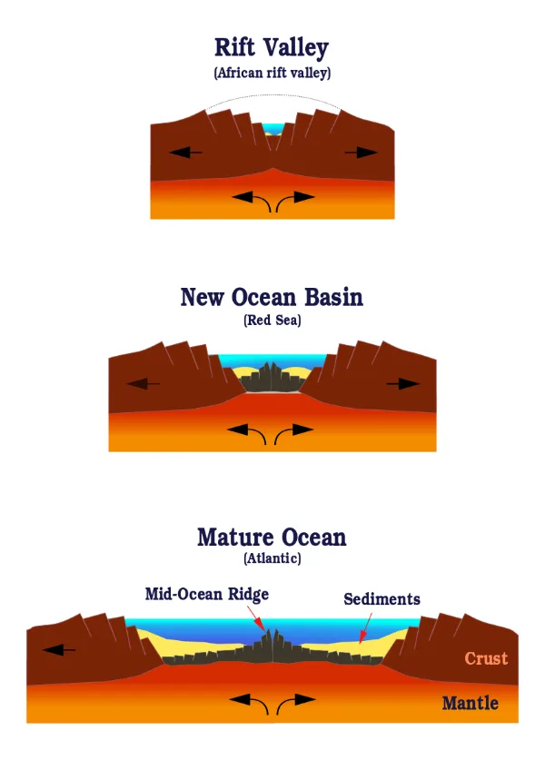
Sống núi giữa đại dương, còn gọi là (spreading center):
- là nơi duy nhất trên Trái Đất tạo ra thạch quyển đại dương mới: nóng chảy do giảm áp biến vật chất quyển mềm thành thạch quyển mới trào lên qua các khe nứt;
- sinh ra nhiều dung nham hơn mọi kiểu núi lửa khác cộng lại, dù phần lớn chưa được lập bản đồ vì nằm sâu dưới đáy biển (Iceland là nơi hiếm hoi thấy kiểu tách giãn này trên đất liền);
- nhô cao vì thạch quyển mới nóng nhẹ hơn quyển mềm bên dưới; khối đá nổi đẳng tĩnh này nổi một phần, như cục đá nổi trong cốc nước.
Khi thạch quyển di chuyển xa sống núi, nó nguội đi, đặc hơn và lún xuống thành những (abyssal plain) rộng, thấp, khá bằng phẳng. Vì vậy đáy biển già nhất phải nằm xa sống núi nhất, và tuổi đá đã xác nhận điều đó. Trầm tích cũng mỏng hơn gần sống núi vì có ít thời gian tích tụ hơn.

Các dải từ
giải thích các dải từ đối xứng: từ trường Trái Đất được in vào đá mới khi nó hình thành ở sống núi. Mácma rất nóng không có từ tính; khi các mảng tách ra, nó nguội xuống dưới (điểm Curie, Curie point), nhiệt độ mà dưới đó từ trường bị khóa vào khoáng vật từ tính. Các dải xen kẽ vì cực bắc và cực nam từ của Trái Đất định kỳ hoán đổi (, magnetic reversal). Kiểu dải này được dùng để tái dựng chuyển động mảng trong quá khứ và đo tốc độ tách giãn.

Miệng phun thủy nhiệt và sự sống không cần ánh sáng

Khói đen
Sống núi có nhiều (hydrothermal vent): các khe nứt sâu nơi nước biển lưu thông qua đá nóng rồi trào lên mang theo khí, khoáng chất hòa tan và hạt nhỏ, trông như khói đen dưới nước. Năm 1977, các nhà khoa học trên tàu lặn Alvin phát hiện những quần xã sinh vật phong phú ở đây, kể cả giun ống cao hơn người, sống trong bóng tối hoàn toàn. Chúng dựa vào năng lượng địa nhiệt và quá trình (chemosynthesis) của vi khuẩn từ hợp chất lưu huỳnh. Trước đó, người ta cho rằng mọi sự sống đều cần quang hợp. Một số nhà khoa học cho rằng môi trường như vậy có thể là nơi sự sống bắt đầu, và có thể có sự sống ở nơi khác, như trên Europa, vệ tinh của Sao Mộc.
Tự kiểm tra: Bài kiểm tra mục 2.4 trong giáo trình (tiếng Anh) ↗
2.5Ranh giới chuyển dạng
Ở (transform boundary; còn gọi là ranh giới trượt bằng hay bảo toàn), các mảng trượt qua nhau theo phương ngang. Chuyển động được mô tả theo góc nhìn của người đứng trên một mảng nhìn sang mảng bên kia:
- (dextral, right-lateral): mảng đối diện dịch sang phải.
- (sinistral, left-lateral): mảng đối diện dịch sang trái.

Phần lớn ranh giới chuyển dạng nằm dưới đáy biển quanh sống núi giữa đại dương. Chúng tạo thành các (fracture zone) không động đất, gồm các đứt gãy chuyển dạng không gây động đất, để điều tiết tốc độ tách giãn khác nhau dọc sống núi. Số khác gây động đất đáng kể nhưng ít tạo núi hay núi lửa: nếu các mảng không trượt qua nhau được, ứng suất tích tụ và giải phóng đột ngột thành động đất. Quan trọng nhất với con người là các đứt gãy trong lục địa, gây động đất trung bình đến lớn: đứt gãy San Andreas (California), đứt gãy Bắc và Đông Anatolia (Thổ Nhĩ Kỳ), đứt gãy Altyn Tagh (Trung Á) và đứt gãy Alpine (New Zealand).

2.5.1 Ép trượt và giãn trượt
Những khúc uốn trên đứt gãy chuyển dạng tạo thêm lực nén hoặc lực giãn và gây ra các đới đứt gãy thứ cấp.


| Ép trượt | Giãn trượt | |
|---|---|---|
| Lực thêm vào | (transpression): lực nén cộng với trượt cắt | (transtension): lực giãn cộng với trượt cắt |
| Kiểu khúc uốn | : các mảng bị cản không trượt qua được | : các mảng bị kéo tách ra |
| Kết quả | Tạo núi (núi bị dịch chuyển, thậm chí xoay) | Vùng trũng (bồn), đôi khi có núi lửa |
| Ví dụ | Vùng Big Bend, phía nam đứt gãy San Andreas | Biển Chết (Israel–Jordan); hồ Salton Sea (California) |
2.5.2 Điểm xuyên cắt
(piercing point) là một cấu trúc địa chất bị đứt gãy cắt qua. Ghép hai phần bị tách ra (tốt nhất khi có hình dạng đặc trưng) cho biết đứt gãy đã dịch chuyển bao xa. Phương pháp này đặc biệt hữu ích với đứt gãy chuyển dạng, vì chuyển động ngang giữ cấu trúc tương đối nguyên vẹn; đứt gãy thuận và nghịch thường làm mờ hoặc phá hủy chúng. Các điểm xuyên cắt cho thấy đứt gãy San Andreas đã dịch chuyển hơn 225 km trong 20 triệu năm qua, trên ba vết đứt gãy khác nhau.

Tự kiểm tra: Bài kiểm tra mục 2.5 trong giáo trình (tiếng Anh) ↗
2.6Chu trình Wilson
(Wilson Cycle), đặt theo tên J. Tuzo Wilson, người mô tả nó lần đầu năm 1966, mô tả sự hình thành và tan vỡ lặp đi lặp lại của các siêu lục địa như Pangaea và Rodinia. Chu trình này đã diễn ra ít nhất ba tỷ năm, có thể lâu hơn.
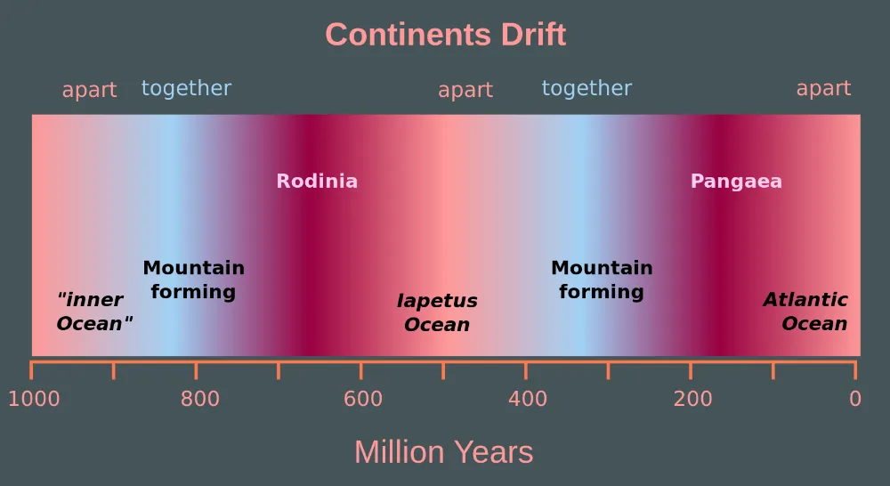
Vì sao tách giãn bắt đầu: một cơ chế được đề xuất là mảng lục địa phản xạ nhiệt tốt hơn nhiều so với mảng đại dương. Khi các lục địa tụ lại, chúng phản xạ nhiều nhiệt hơn trở lại manti, làm đối lưu mạnh hơn và khởi động tách giãn. Một số nhà địa chất cho rằng (mantle plume) là tàn dư của những thời kỳ manti nóng hơn và dòng dâng mạnh hơn này.
Điều gì giữ cho các mảng chuyển động phần lớn vẫn là bí ẩn. Có ba trường phái:
| Giả thuyết | Ý tưởng | Mức ủng hộ |
|---|---|---|
| (ridge push) | Sau khi tách giãn, các trung tâm tách giãn giữa đại dương và dòng đối lưu bên dưới đẩy các mảng ra xa. | Ít hơn |
| (slab pull) | Các phiến chìm trong đới hút chìm kéo các mảng đi. | Được ủng hộ nhiều nhất theo bằng chứng hiện nay |
| (gravitational sliding) | Trọng lực kéo mảng trượt xuống từ sống núi cao qua quyển mềm. | Ít hơn |
2.7Điểm nóng
Để đo chuyển động mảng chính xác hơn, các nhà khoa học nghiên cứu (hotspot). Được J. Tuzo Wilson đề xuất lần đầu năm 1963, điểm nóng là vùng mà mácma xuyên qua mảng tạo thành trung tâm núi lửa (đảo trên biển, núi trên đất liền). Khi mảng di chuyển qua điểm nóng, núi lửa rời khỏi nguồn mácma và tắt, còn mácma xuyên qua chỗ khác để tạo núi lửa mới. Mảng di chuyển trên một điểm nóng đứng yên để lại chuỗi đảo hoặc chuỗi núi. Theo định nghĩa cổ điển, điểm nóng không di chuyển, dù bằng chứng gần đây cho thấy có ngoại lệ.
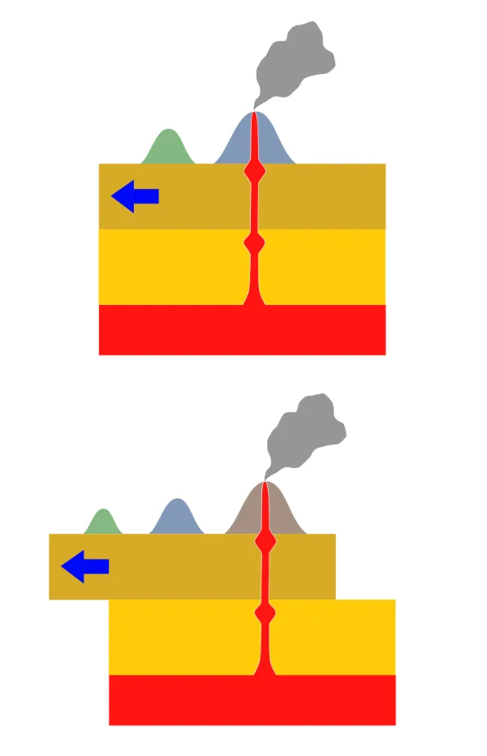
Đo chuyển động mảng bằng dấu vết điểm nóng
Điểm nóng là kiểu núi lửa duy nhất không gắn với hút chìm hay tách giãn ở ranh giới mảng. Vì điểm nóng đứng yên, chuỗi núi lửa ghi lại đường đi của mảng: tuổi các lần phun trào và hình dạng chuỗi cho biết tốc độ và hướng chuyển động của mảng so với điểm nóng.
Tốc độ = khoảng cách giữa hai núi lửa ÷ chênh lệch tuổi của chúng. Hướng đi từ núi lửa già về núi lửa trẻ ngược với hướng chuyển động của mảng.
Các câu hỏi còn mở. Nguồn gốc mácma điểm nóng vẫn còn tranh luận: một số cho rằng vật chất siêu nóng dâng lên từ sâu tận nhân thành một chùm manti; số khác cho rằng nguồn nằm trong manti. Cách điểm nóng khởi phát cũng gây tranh cãi: ý kiến phổ biến là chúng bắt đầu ở ranh giới phân kỳ khi siêu lục địa tách giãn; phiến hút chìm và cả va chạm thiên thể lớn cũng được nêu ra. Có hàng chục điểm nóng, gồm Tahiti, tam giác Afar, đảo Phục Sinh, Iceland, Galápagos và Samoa. Hoa Kỳ có hai điểm nóng lớn và được nghiên cứu kỹ nhất: Hawaii và Yellowstone.
2.7.1 Điểm nóng Hawaii
Hawaii là một trong những điểm nóng hoạt động mạnh nhất Trái Đất. Bằng chứng cho thấy nó có tuổi ít nhất 80 triệu năm (có thể già hơn, nhưng đá cũ hơn đã bị hút chìm). Đảo Lớn (Big Island) nằm trên một chùm manti lớn, và Kīlauea là miệng phun chính (chương ghi núi lửa phun liên tục từ năm 1983; xem ghi chú kiểm chứng). Chuỗi đảo, phần lớn nằm dưới nước, trải dài gần 6.000 km qua Thái Bình Dương. Đặc điểm nổi bật nhất là một khúc gập 60° ở giữa chuỗi, đánh dấu sự đổi hướng của mảng khoảng 50 triệu năm trước, thường được gắn với sự tái cấu trúc mảng nhưng cũng có thể do chùm manti dịch chuyển. (tomography) đã vẽ chùm manti xuống tới manti dưới, và tuổi đá, thảm thực vật, kích thước đảo đều cho thấy các đảo già nhất nằm xa điểm nóng nhất.
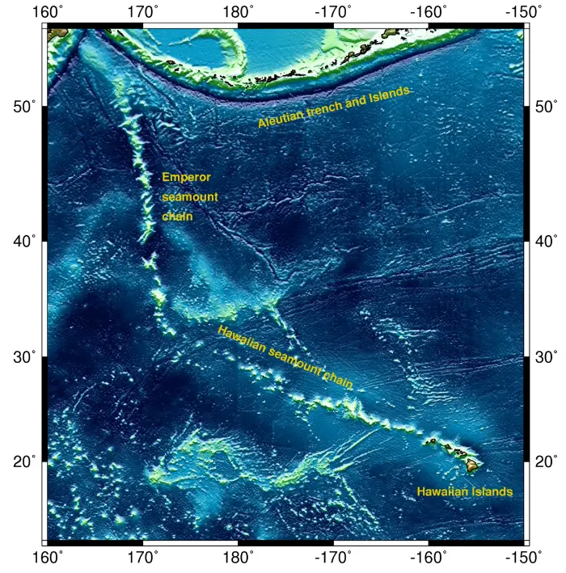
2.7.2 Điểm nóng Yellowstone
Yellowstone cũng hình thành do mácma dâng lên qua thạch quyển, nhưng nằm dưới một mảng lục địa dày. Mảng đại dương mỏng của Hawaii dễ bị xuyên thủng; ở Yellowstone, mảng dày là rào cản khó vượt hơn, nên các lần phun trào thường dữ dội hơn nhiều nhưng ít xảy ra hơn. Hơn 15 triệu năm phun trào đã tạo một vệt cong ngang miền tây Hoa Kỳ. Có ý kiến cho rằng điểm nóng này liên quan đến các bazan lũ Columbia River cổ hơn, thậm chí đến hoạt động núi lửa 70 triệu năm tuổi ở vùng Yukon, Canada.
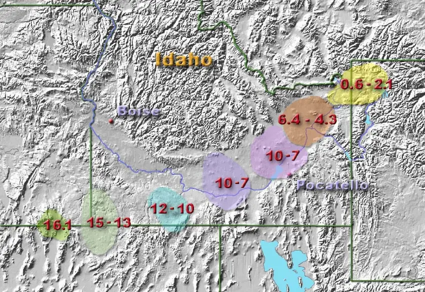
Lần phun trào lớn gần nhất tạo ra miệng núi lửa (caldera) Yellowstone và thành hệ tuf Lava Creek khoảng 631.000 năm trước, phóng 1.000 km³ tro và mácma vào khí quyển; tro bay tới tận bang Mississippi. Các nhà khoa học dự đoán nếu phun trào lần nữa cũng sẽ cực lớn, với hậu quả vượt xa miền tây Hoa Kỳ: những vụ phun trào như vậy phủ khí quyển bằng khí và tro, che ánh sáng Mặt Trời, làm thay đổi mạnh khí hậu và có thể ảnh hưởng đến sản xuất lương thực toàn cầu.
| Hawaii | Yellowstone | |
|---|---|---|
| Mảng | Mảng đại dương mỏng, dễ xuyên thủng | Mảng lục địa dày, khó xuyên thủng |
| Phun trào | Thường xuyên; Kīlauea là miệng phun chính | Dữ dội hơn nhiều, ít xảy ra hơn |
| Dấu vết | Chuỗi ~6.000 km, khúc gập 60° (~50 triệu năm trước); ít nhất 80 triệu năm tuổi | Vệt cong ngang miền tây Hoa Kỳ; hơn 15 triệu năm |
| Đáng chú ý | Đảo già nhất nằm xa điểm nóng nhất | Phun trào lớn gần nhất ~631.000 năm trước, 1.000 km³ tro và mácma |
Tự kiểm tra: Bài kiểm tra mục 2.6 và 2.7 trong giáo trình (tiếng Anh) ↗
Tóm tắt
Kiến tạo mảng là một học thuyết thống nhất: nó giải thích gần như mọi quá trình địa chất lớn trên Trái Đất và đã dẫn dắt các nhà địa chất từ thập niên 1950–1960. Lớp bề mặt Trái Đất bị chia thành mạng lưới các mảng rắn, tương đối giòn. Bên dưới là một lớp nóng hơn, dẻo hơn với các dòng đối lưu dâng lên do nhiệt bên trong Trái Đất. Các dòng này đưa các mảng lại gần, tách xa và trượt ngang qua nhau. Động đất và núi lửa hình thành nơi các mảng tương tác, trừ núi lửa điểm nóng, vốn không do chuyển động mảng gây ra.
Tóm tắt nhanh
- Thuyết trôi dạt của Wegener có bằng chứng mạnh (lục địa khớp nhau, hóa thạch, đá, khí hậu) nhưng thiếu cơ chế; tách giãn đáy đại dương bổ sung cơ chế đó vào thập niên 1960.
- Bằng chứng từ đáy biển: sống núi giữa Đại Tây Dương, trầm tích mỏng gần sống núi, các dải từ đối xứng, đới Wadati-Benioff.
- Lớp hóa học: vỏ, manti, nhân. Lớp vật lý: thạch quyển, quyển mềm, lớp phủ giữa, nhân ngoài (lỏng), nhân trong (rắn).
- Hội tụ: hút chìm (rãnh, nóng chảy do chất bốc, cung núi lửa, động đất lớn nhất) hoặc va chạm (núi cao không phải núi lửa).
- Phân kỳ: đới tách giãn lục địa (đứt gãy thuận, địa hào, nóng chảy do giảm áp) phát triển thành sống núi giữa đại dương tạo đáy biển mới.
- Chuyển dạng: các mảng trượt qua nhau (trượt bằng phải hoặc trái); khúc uốn gây ép trượt hoặc giãn trượt; điểm xuyên cắt đo độ dịch chuyển.
- Chu trình Wilson: tách giãn → đại dương mới → hút chìm → khép đại dương → va chạm; lực kéo phiến là động lực được ủng hộ nhiều nhất.
- Dấu vết điểm nóng (Hawaii, Yellowstone) cho biết tốc độ và hướng chuyển động của mảng.
Tự kiểm tra: Bài kiểm tra ôn tập Chương 2 trong giáo trình (tiếng Anh) ↗
Tài liệu tham khảo
Ghi chú kiểm chứng
Mọi nội dung trong tài liệu đã được đối chiếu với chương trong giáo trình. Khi chương khác với tài liệu tham khảo hiện hành hoặc tự mâu thuẫn, tài liệu này giữ giá trị của chương (vì đó là nội dung bạn sẽ được kiểm tra) và ghi chú tại đây.
| Chủ đề | Chương ghi | Ghi chú |
|---|---|---|
| Tốc độ hút chìm trung bình | "25 dặm mỗi triệu năm, khoảng nửa inch mỗi năm" | Hai con số không khớp: 25 dặm mỗi triệu năm là khoảng 4 cm (1,6 inch) mỗi năm. Tài liệu chỉ nêu con số 25 dặm/triệu năm. |
| Hess và tách giãn đáy đại dương | Đề xuất năm 1959 | Hess phổ biến ý tưởng khoảng năm 1960 và công bố năm 1962 ("History of Ocean Basins", có trong danh mục tham khảo của chính chương). |
| Độ sâu lớp phủ giữa | "Nằm ở độ sâu khoảng 410 và 660 km" | 410–660 km là đới chuyển tiếp ở phần trên của lớp phủ giữa; manti dưới tiếp tục từ ~660 km đến nhân ở ~2.890 km (USGS, The Interior of the Earth). Tài liệu trình bày theo cách đó. |
| Kīlauea | "Phun trào liên tục từ năm 1983" | Đợt phun Puʻu ʻŌʻō kéo dài từ 1983 đến 2018; sau đó Kīlauea phun trào thành từng đợt riêng (Đài quan sát núi lửa Hawaii, USGS). |
| Khúc gập Hawaii–Emperor | Khoảng 50 triệu năm trước | Được định tuổi khoảng 47 triệu năm trước (Sharp & Clague, 2006, Science 313: 1281–1284). |
| Giun ống khổng lồ | Văn bản: "dài 10 foot"; chú thích hình: "trên 6 foot" | Chương không nhất quán; tài liệu chỉ ghi "cao hơn người". |
| Hình giãn trượt | Chú thích ghi tạo ra "khúc uốn nén" (restraining bend) | Đứt gãy giãn trượt tạo khúc uốn giãn (releasing bend), như chính văn bản của chương viết. Chú thích trong tài liệu dùng "khúc uốn giãn". |
| Hình đới siêu đứt gãy Sunda | Chú thích: "động đất Ấn Độ Dương năm 2006, Mw 9,1–9,3" | Trận động đất xảy ra năm 2004, như văn bản của chương ghi (hình này không được đưa vào đây). |
Chương ghi nhân trong "dày khoảng 1.220 km"; con số này là bán kính của nó, vì nhân trong kéo dài đến tâm Trái Đất. Độ sâu tâm Trái Đất (~6.370 km) là 5.150 km cộng 1.220 km theo số liệu của chương.
Nguồn & trích dẫn
Nội dung tóm tắt từ An Introduction to Geology, Chương 2, © 2017 Chris Johnson, Matthew D. Affolter, Paul Inkenbrandt và Cam Mosher, theo giấy phép CC BY-NC-SA 4.0. Tài liệu này được chia sẻ theo cùng giấy phép. Hình ảnh lấy từ chương và giữ giấy phép riêng, ghi dưới mỗi hình.
- CC BY-SA: bản đồ ranh giới mảng (Eric Gaba), ảnh động đối lưu (Oni Lukos), bản đồ độ sâu Moho (AllenMcC.), rìa thụ động (Joshua Doubek), Pangaea (User:Kieff), sự ra đời đại dương (Hannes Grobe / Lichtspielderivative), đứt gãy trượt bằng (Cferrero), khúc uốn nén (GeoAsh), khúc uốn giãn (K. Martin), chu trình Wilson (Hannes Grobe / Hardwigg).
- CC BY: khói đen (Thư viện ảnh NOAA), dấu vết điểm nóng Yellowstone (Kelvin Case).
- Phạm vi công cộng: bản đồ Snider-Pellegrini, bản đồ hóa thạch, đới Wadati-Benioff, các loại ranh giới, trước cung, sơ đồ hút chìm và va chạm (USGS), hút chìm Laramide (Melanie Moreno), địa lũy và địa hào (USGS), Afar (DEMIS), tuổi đáy biển (NOAA), sơ đồ dải từ (Chmee2), bản đồ San Andreas, suối Wallace (Robert E. Wallace), sơ đồ điểm nóng (Los688), chuỗi Hawaii–Emperor (Ingo Wölbern).
- Sơ đồ các lớp, sơ đồ động các loại ranh giới, sơ đồ động dải từ, vòng chu trình Wilson và dòng thời gian: vẽ cho tài liệu này dựa trên văn bản của chương.
- Các hình được ghi "All Rights Reserved" trong chương (ảnh mở đầu, hình lãnh địa kiến tạo, ảnh GIF dải từ của Atwater) không được đưa vào.